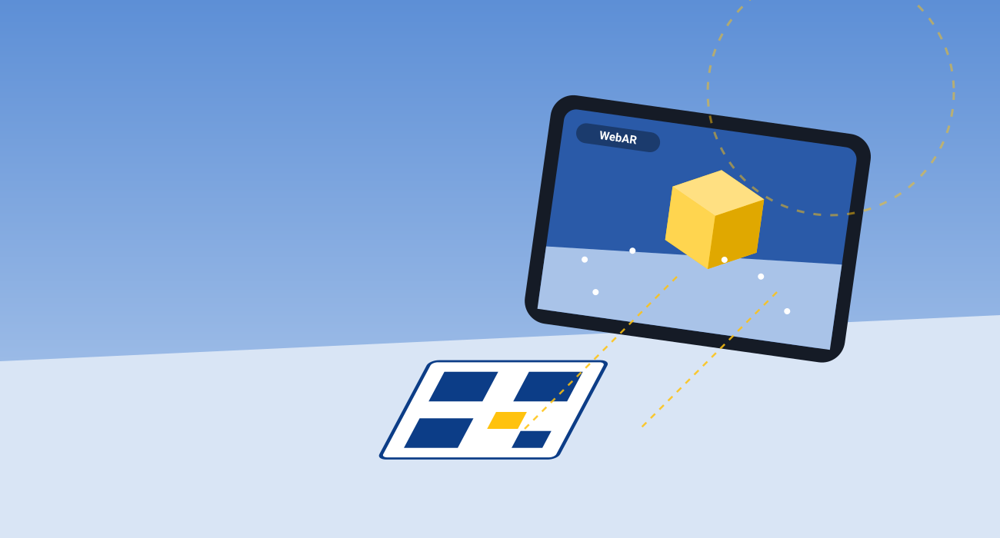

AR / VR (gafas) · Aula ATECA
Onirix Studio
Crea experiencias de realidad aumentada sin programar y compártelas con un enlace o un QR: se abren en el navegador del móvil, sin instalar nada.
Onirix es una plataforma española de realidad aumentada en el navegador (WebAR). Desde Onirix Studio, una aplicación web, se monta la escena arrastrando modelos 3D, vídeos, imágenes y textos, y se publica con un enlace. Quien la abre desde el móvil o la tablet ve el contenido superpuesto a la cámara sin instalar ninguna app. Para quien quiera ir más allá, tiene un editor de código (HTML, CSS y JavaScript) y un SDK.
Es una herramienta muy adecuada para FP porque el alumnado no solo consume AR: la crea. Un ciclo de Mantenimiento puede añadir instrucciones flotantes a una máquina; uno de Turismo, una ruta con contenido en cada parada; uno de Sanidad, una lámina de anatomía que muestra el órgano en 3D al enfocarla.
Cómo funciona
| Pieza | Qué es | Dónde se usa |
|---|---|---|
| Onirix Studio | Editor web para crear y publicar las experiencias | En el PC, desde el navegador |
| Onirix Player | El visor que abre la experiencia | En el navegador del móvil o la tablet (también hay app) |
| Constructor | App para escanear un espacio real | En el móvil, solo para spatial tracking |
Cada experiencia se ancla a algo que la cámara reconoce:
- Image tracking: una imagen o cartel. Es lo más fiable para empezar en clase.
- Surface tracking: una superficie plana, como una mesa o el suelo.
- Spatial tracking: un espacio escaneado previamente (un taller, una sala de máquinas). Es el nivel más avanzado.
Primera experiencia
- Crea una cuenta en studio.onirix.com (hay versión gratuita para probar; revisa sus límites de visitas antes de usarla con un grupo grande).
- Crea un proyecto y una escena de tipo Image tracking. Sube la imagen que servirá de marcador (un cartel impreso en el aula, por ejemplo).
- Añade contenido sobre el marcador: un modelo 3D de Sketchfab, un vídeo o un texto.
- Prueba la escena con la vista previa 3D del editor (no consume visitas).
- Publica y comparte el enlace o el código QR. El alumnado lo abre con la cámara de la tablet o el móvil y enfoca el cartel.
Para que funcione a la primera
Usa marcadores con mucho detalle y contraste (fotos, no logotipos lisos), imprímelos en mate para evitar reflejos y prueba la experiencia en una de las tablets del aula antes de la sesión.
Vídeos de formación
Onirix publica una serie de vídeos cortos para aprender la herramienta paso a paso. Están ordenados de menos a más difícil: empieza por el bloque 1. La documentación completa está en docs.onirix.com.
Bloque 1 · Primeros pasos
Bloque 2 · Escenas y tracking
Bloque 3 · Spatial tracking
Nivel industrial: escanear un espacio real y colocar contenido en él.